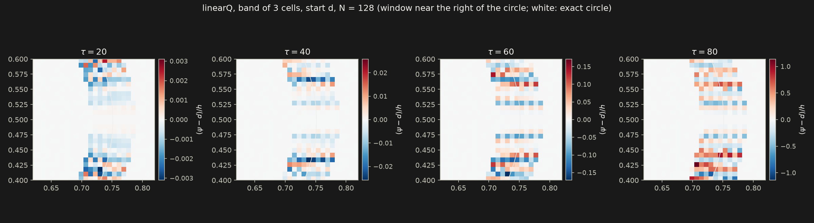
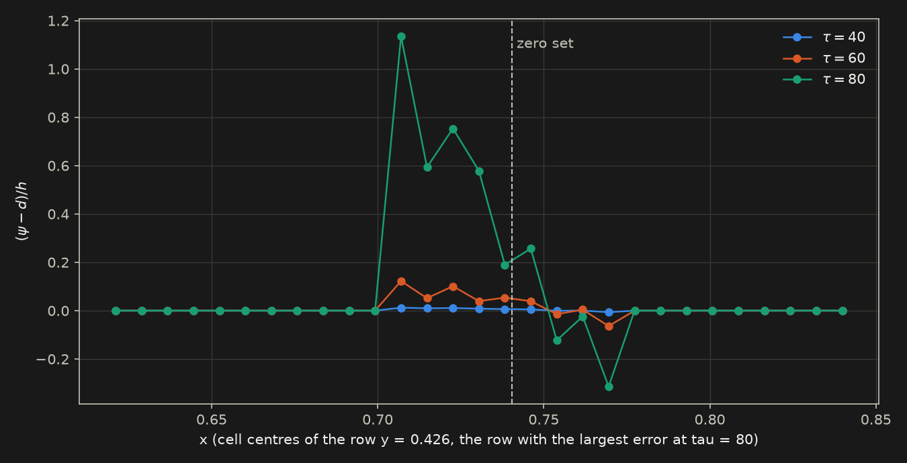
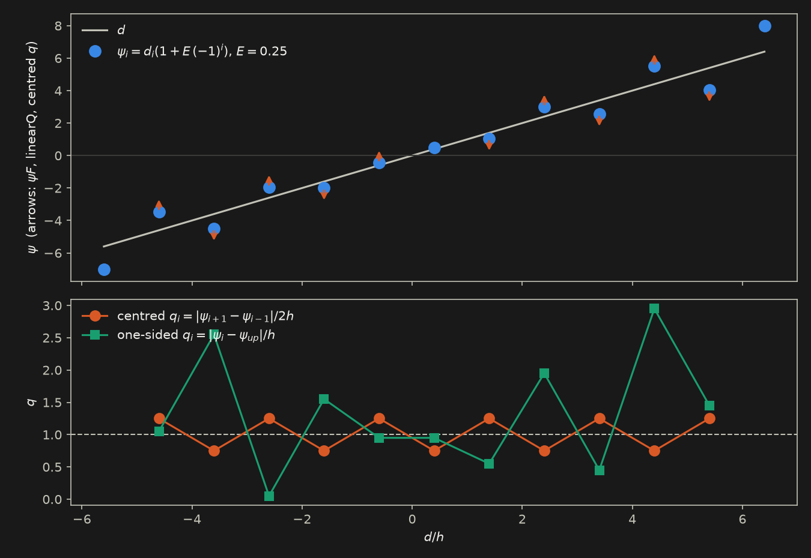
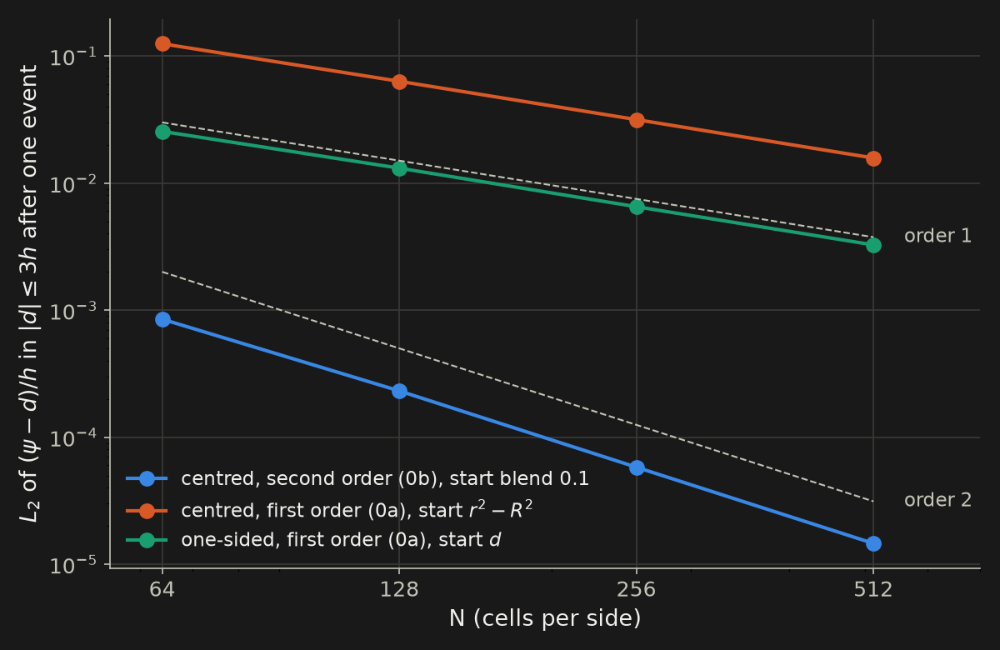
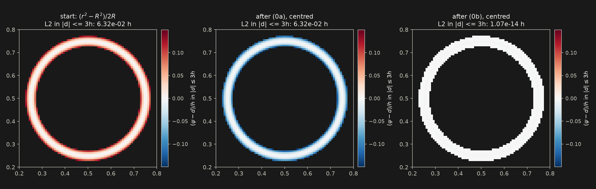
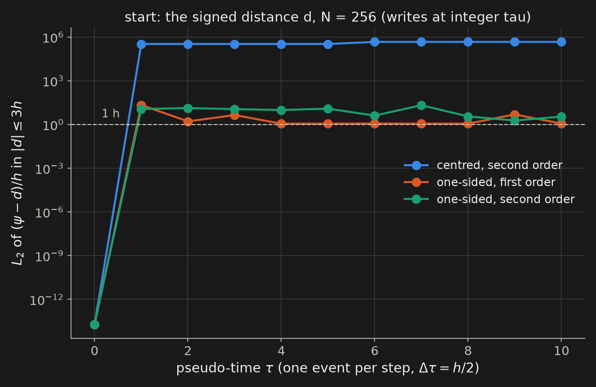
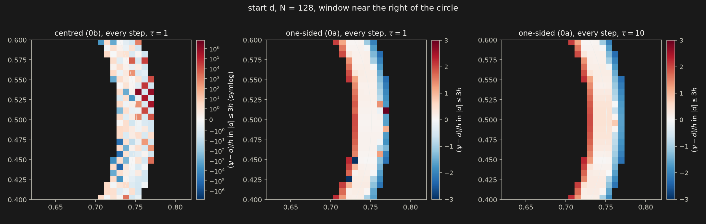
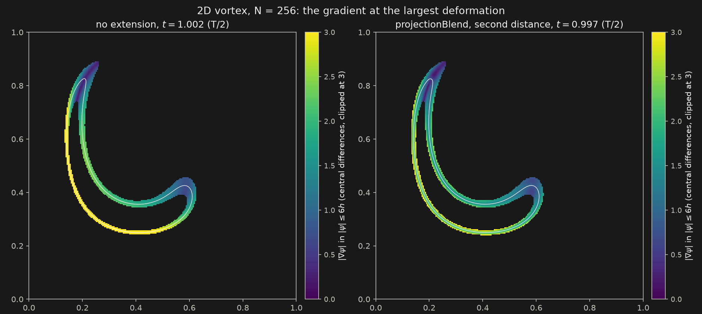
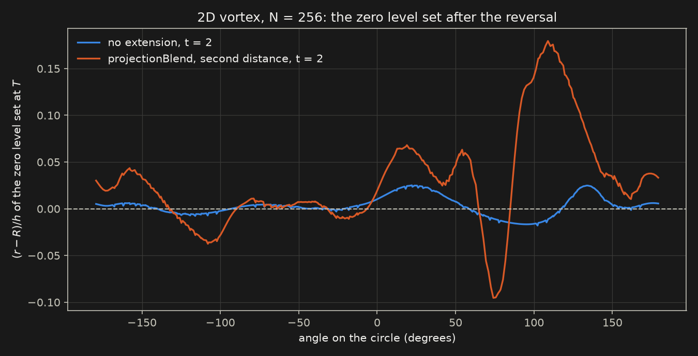

status review: what we tested, what it measured, why it failed, what to do next
Tomislav Marić · Dieter Bothe
MMA, TU Darmstadt · review of 2026-11-01
Every claim is marked MEASURED M, DERIVED D or
HYPOTHESIS H. Sources: STATUS.md 11.15, 11.26 to 11.28; the technical report
gcls-technical-report/; the source-term report gcls-static-source-report/; the knowledge
base (hub hubs/gradient-control). L1 and L2 norms only. Field figures: committed scripts
plot_source_fields.py, plot_rescaling_figures.py, rendered on Lichtenberg from the study data.
Level-set equation with a source: \(\mathrm D_t\psi=\psi F\), \(F=w(q)\,a+G(q)\), \(q=|\nabla\psi|\), \(a=\mathbf n\cdot\mathbf D\,\mathbf n\), \(\zeta=(q^2-1)/2\). Every law has \(G(1)=0\).
| name | what | \(G(q)\) | \(G(0)\) | \(-G'(1)\) | origin |
|---|---|---|---|---|---|
linearQ | linear in q | \(-\mu(q-1)\) | \(\mu\) | \(\mu\) | Soga's restoring term (Bothe–Fricke–Soga) |
linearZ | linear in \(\zeta\) | \(-\mu\zeta\) | \(\mu/2\) | \(\mu\) | Bothe–Marić–Soga dossier |
cubicQ | cubic in q | \(-\mu(q-1)^3\) | \(\mu\) | 0 | dossier |
cubicZ | cubic in \(\zeta\) | \(-\mu\zeta^3\) | \(\mu/8\) | 0 | dossier |
twoThirdsZReg | regularised \(\zeta^{2/3}\) | \(-\mu\zeta/(\zeta^2+\varepsilon^2)^{1/6}\) | \(0.63\mu\) | \(3.68\mu\) | dossier, \(\varepsilon=0.02\) |
saturatedLinearZ | bounded \(\zeta\) law | \(-\mu\zeta/(1+c|\zeta|)\) | \(\mu/3\) | \(\mu\) | dossier, \(c=1\) |
softWall | soft wall (S1a) | \(-C_\kappa\sqrt{\sigma^2+\epsilon_D^2}\tanh[\gamma((q-1)/\delta_s)^p]\) | \(C_\kappa\epsilon_D\)=1 | 0 | Bothe; \(p=5\), \(\delta_s=0.08\) |
beta | SDPLS restoring | \(\beta-q\), rate 1 | 1 | 1 | SDPLS; = linearQ, \(\mu=1\) |
R | SDPLS strain source | \(F=a\) (\(w=1\), \(G=0\)) | zero at \(\mathbf u=0\) | Fricke, Marić, Vučković, Roisman, Bothe | |
Rdiv, RdivStrictSp | material form of R | \(F=a+\nabla\cdot\mathbf u\) | zero at \(\mathbf u=0\) | retracted (diverges) | |
\(G(0)\): the rate where the estimated \(q\) is 0. \(-G'(1)\): the restoring rate for small errors. Both decide the
failure mechanism (slides 13 to 15). Code: src/leiaLevelSet/gradientControl/gradientControlLaws.H.
| name | what it is | line |
|---|---|---|
| S1 | softWall source alone, band of 3 cells | SL, first campaign |
| HL0 | halo-limited velocity extension, travel cap \(R=h\), no source | SL, first campaign |
| HL1q / HL1z | HL0 + linearQ / HL0 + linearZ, \(\mu=1/T_\mathrm{ref}\) | SL, first campaign |
| HL2 | HL0 + softWall | SL, first campaign |
| FP0 | closest-point (foot-point) velocity extension | SL, first campaign |
| CS1 | combined source \(F=a+\lambda(1-q)\): strain + linearQ (Bothe, Soga) | SL, 2026-10-13 |
| CS0s / CS0r | the strain term alone / the restoring term alone | SL, 2026-10-13 |
| centred q | \(|\nabla_h\psi|\) from the centred least-squares gradient (gradPsi fvc) | Eulerian default, SL default |
upwindFit | one-sided q: upwind-weighted mean of the face neighbours' quadratic fits | SL only (GC_Q_SCHEME) |
| one-sided (godunov) | Rouy–Tourin \(|\nabla\psi|\): per axis the largest one-sided slope toward the zero set | UFVM (RESCALE_MAG_GRAD) |
| (0a) | first-order rescaling \(r=\psi/|\nabla\psi|\) | D. Bothe, 2026-10 |
| (0b) | second-order rescaling \(\hat d\) (the stable root of the 2nd-order Taylor expansion) | D. Bothe, 2026-10 |
| use A | apply (0a) or (0b) to \(\psi\) (REDISTANCER rescaling), once or every step | UFVM, this review |
| use B | blended projection extension (VELOCITY_EXTENSION projectionBlend) | UFVM, this review |
| DA volume | volume of the Detrixhe–Aslam phase indicator from \(\psi\) | both lines |
For \(\partial_t\psi+\mathbf u\cdot\nabla\psi=0\) the exact solution has
\[ \mathrm D_t q = -a\,q,\qquad a=\mathbf n\cdot\mathbf D\,\mathbf n,\qquad \mathbf n=\nabla\psi/q . \]
Normal strain steepens or flattens the profile. Can a source term \(\psi F\), or an extension of the velocity off the interface, keep \(q\approx1\) in the narrow band
| date | stage | outcome |
|---|---|---|
| 09-26 to 28 | first campaign: 6 candidates in the 2D method gate (SL line) | all fail |
| 10-13 | zero-flow gates E1, E2.1; combined source CS1 in the kinematic gate | one-sided q passes, CS1 fails |
| 10-14 to 29 | static test: every Eulerian source alone at \(\mathbf u=0\), 608 runs | every law unstable with centred q |
| 10-29 to 31 | D. Bothe's notes: rescaling (use A), blended extension (use B), 360 runs | A once works, A every step fails, B mixed |
The thread through all four: how \(q\) is estimated decides the outcome before the law does. The centred estimate is blind to the odd-even mode; every failure in stages 2 to 4 traces back to it.
| candidate | shear arm, shape error at T vs baseline | other arms |
|---|---|---|
| S1 | 411×, order 0.06 | translating diverges at N = 142; oscillating volume error 21 |
| HL0 | 14×, order 1.39 (baseline 3.07) | oscillating band error 2e7; translating 64× |
| HL1q | 173×, order 0.02 | stationary droplet destroyed at N = 200: shape 3.8 R, volume 76 % |
| HL1z | band error 10.5, shape 1.65, volume 1.6 | stationary destroyed: 3.7 R, 84 % |
| HL2 | 400× | translating diverges on every rung |
| FP0 | 34×, order 1.38 | seam-dependent: kinematic 0.45, coupled 1.11 |
Causes (technical report, 2026-09-28):
E1, centred q, N = 100, \(\mathbf u=0\), linearQ, band 3 M
E2.1, one-sided q (upwindFit), \(\mu t=80\) M
| N | 50 | 100 | 200 |
|---|---|---|---|
| crossing shift, L2 / h | 1.6e-2 | 2.1e-3 | 3.0e-4 |
| rms(ψ−d)/h, |d|<3h | 1.5e-2 | 2.3e-3 | 3.8e-4 |
| odd-even growth, μt 40→80 | 1.69× | 1.32× | 1.16× |
Crossing order 2.89 / 2.82, profile order 3.70 / 3.58. From \(\psi_0=1.5d\): median \(\psi/d\) at the interface 0.998. np 4 = serial to 1e-13.
upwindFit is the only q estimator that has passed a gate. Make it the default of
every SL source and rescaling test?One-sided q, 2D vortex (reversed), N = 68 / 96 / 136, \(M_\mu=1\), band 3:
| arm | gradient error at T/2, ratio to baseline | shape order (baseline 3.25) | volume at T, N = 136 (baseline 2.2e-4) |
|---|---|---|---|
| CS1 | 0.14 | 0.88 | 3.7e-2 |
| CS0s | 0.58 | 1.24 | 1.2e-2 |
| CS0r | 0.30 | 0.26 | 3.3e-2 |
leiaLevelSetFoam integrates only \(\partial_\tau\psi=\psi\,G(q)\); every rate is 1, so \(\tau\) counts
source times.beta, and R, Rdiv, RdivStrictSp as null checks (zero at \(\mathbf u=0\): bit-identical to no source).gradPsi fvc); the Eulerian line has no one-sided q.minIter 1.| law | \(G(0)\) | \(-G'(1)\) | growth rate, band | growth rate, whole domain |
|---|---|---|---|---|
| linearQ | 1 | 1 | 0.982–1.001 (7) | 0.807–1.066 (32) |
| linearZ | 0.5 | 1 | 0.464–0.499 (23) | 0.440–0.512 (32) |
| saturatedLinearZ | 0.333 | 1 | 0.331–0.337 (22) | 0.335–0.337 (32) |
| twoThirdsZReg | 0.630 | 3.68 | 0.594–0.623 (32) | 0.520–0.646 (32) |
| cubicQ | 1 | 0 | no growth phase | 0.888–1.044 (32) |
| cubicZ | 0.125 | 0 | 0.121–0.122 (2) | 0.113–0.127 (32) |
| softWall | 1 | 0* | 1.002–1.009 (15) | 1.007–1.018 (32) |
| beta | 1 | 1 | 0.982–1.001 (6) | 0.809–1.066 (24) |
(n): cases with an exponential growth phase, of 32 per law and region (beta: 24). The rate follows \(G(0)\), not \(-G'(1)\): twoThirdsZReg has the steepest restoring slope and grows at 0.6. *softWall: slope 0 at \(q=1\), but about \(40\sigma\) at \(|q-1|\approx0.07\) — nearly a switch.


Two things act together: the band edge (a jump in the source) and the odd-even error. The next three slides show why the centred \(q\) carries both onto the interface instead of removing them.

Take the odd-even mode on a distance, in 1D: \(\psi_i=d_i(1+E\,s_i)\), \(s_i=(-1)^i\).
Centred: \(q_i=\dfrac{|\psi_{i+1}-\psi_{i-1}|}{2h}=1-E\,s_i\).
The two neighbours of cell \(i\) carry the opposite sign \(-s_i\). So a cell that is too steep (\(s_i=+1\), \(|\psi_i|>|d_i|\)) reads \(q=1-E<1\), and linearQ gives \(F=\mu E>0\): it makes \(|\psi_i|\) larger. A cell that is too flat reads \(q>1\) and is made flatter. Every arrow points away from \(d\).
One-sided: \(q_i=|\psi_i-\psi_{up}|/h\) contains the cell's own value, so a too-steep cell reads \(q>1\) and is pulled back. Every one-sided arrow points toward \(d\).
Linearise \(\partial_\tau\psi=-\mu\psi(q-1)\) about \(\psi=d+\delta\), with \(q\approx1+\mathbf n\cdot\nabla_h\delta\):
\[ \partial_\tau\delta = -\mu\, d\;\mathbf n\cdot\nabla_h\delta . \]
Smooth \(\delta\): an advection with speed \(\mu d\,\mathbf n\), away from the zero set. The error leaves the band. This is the restoring action the law is designed for.
Odd-even \(\delta=(-1)^{i+j}A\): the centred difference returns \(\nabla_h\delta=-(-1)^{i+j}\nabla A\). The envelope obeys \(\partial_\tau A=+\mu d\,\mathbf n\cdot\nabla A\): advection toward the zero set.
| prediction from this mechanism | measured |
|---|---|
| every law grows at \(G(0)\), not at \(-G'(1)\) | yes, within a few % (slide 10) |
| cubicQ (\(G'(1)=0\)): no linear phase in the band, so no growth there | no growth phase in the band |
| cubicQ on the whole domain: the kink at the centre gives \(q<1\) at once, growth at \(G(0)=1\) | 0.888–1.044 |
| the rescaling (0a) with centred q is one linearQ step with \(\mu\Delta\tau=1\): ×2 per event on \(A\propto d\) | diverges every step (slide 21) |
| a one-sided q removes the defect | E2.1: order 2.9, stable |
The law cannot repair this: every law with \(G(0)>0\) grows. The estimator must not vanish at a grid-scale extremum.
Model: \(\partial_t\phi+\mathbf v^{ext}\cdot\nabla\phi=\beta\phi(1-|\nabla\phi|)\)
Projection: \(P_x=x-\phi\nabla\phi/|\nabla\phi|^2\)
Blend: \(\mathbf v^{ext}=\delta\,\mathbf v(x)+(1-\delta)\,\mathbf v(P_x)\)
Plan: (0) algebraic improvement — a) \(\phi\to\phi/|\nabla\phi|\), b) \(\phi\to\tilde\phi\); (1) extension with blending; (2) source term.
(0a) \(r=\phi/|\nabla\phi|=d-\tfrac{B}{2A}d^2+O(d^3)\), \(A=|\nabla\phi|\), \(B=\partial_{nn}\phi\): first order.
(0b) \(\hat d=\dfrac{2\phi}{|\nabla\phi|+\sqrt{(|\nabla\phi|^2-2\phi\,\partial_{nn}\phi)^+}}=d+O(d^3)\): second order.
Both multiply \(\phi\) by a positive factor: the sign and the zero set stay. (0b) is exact for \(r^2-R^2\) D.
Use A: apply the map to \(\psi\) (once, or every step) — your decision: an alternative to the source term. Use B: use the distance only inside the extension, with and without a small source (linearQ, \(\mu=0.1\)).
Error of the discrete maps: \(\delta r\approx-d\,\delta q\), \(\ \delta\hat d\approx-d\,\delta q+\tfrac12d^2\,\delta B\), with \(\delta q\) the error of \(|\nabla\psi|\) and \(\delta B\) that of \(\partial_{nn}\psi\). In the band \(|d|\le3h\).
| UFVM, uniform hex | UFVM, polyhedra | SL quadratic fit, any mesh | |
|---|---|---|---|
| \(\delta q\) | \(O(h^2)\) | \(O(h)\) | \(O(h^2)\) |
| \(\delta B\) | \(O(h^2)\) (gradient of the gradient) | \(O(1)\), inconsistent | \(O(h)\) |
| (0a) | order 1 | order 1 | order 1 |
| (0b) | order 2 | order 1 | order 2 |
Order in units of \(h\): a pointwise \(O(h^{p+1})\) is order \(p\). Applied repeatedly, a map can accumulate its per-event error, and with the centred gradient (0a) is one linearQ step with \(\mu\Delta\tau=1\) — the mechanism of slide 14 with a full step.
Measured here: uniform hexahedra only. The SL column is task T6 of the SL session.

The pre-registered R1 line for \(r^2-R^2\) reads FAIL as written (the "order" of a round-off error is −1.06); kept as written, the value is round-off.


Seed: the error of one event (2.6e-4 h at N = 128). Amplifier: the centred gradient, ×2 per event (slide 14). The map without a Hessian fails in the same way, so the Hessian is not the cause on this mesh.

\(\mathbf U^{ext}=\delta\mathbf U+(1-\delta)\mathbf U(P)\), \(P=x-\mathrm{dist}\,\mathbf n\), \(\mathbf U(P)\) by a first-order Taylor step, \(\delta\): 0 at \(|\mathrm{dist}|\le1.5h\) to 1 at \(4h\). Eulerian transport, reversed flows, no filters.
| case (finest rung) | gradient error at T/2 | shape at T | shape order (baseline) | volume at T |
|---|---|---|---|---|
| 2D vortex, N = 256 | 0.46× | 5.1× | 2.53 (3.23) | 8× (1.5e-3) |
| 3D shear, N = 128 | 0.43× | 1.56× | 1.28 (1.87) | 11× (5.1e-2) |
| 3D deformation, N = 128 | 0.66× | 0.82× | 0.83 (0.80) | 0.48× (0.12) |
law block) and re-ran.

H The baseline is a linear transport with a prescribed velocity, so the forward and the backward half cancel most of their error at \(T\). The extension depends on \(\psi\), so the backward half does not undo the forward half. Supporting: in 2D the extension's volume error at \(T/2\) is 16× smaller (2.8e-5 against 4.7e-4); on the unresolved deformation, where there is no cancellation to lose, it improves every metric.
2Dtranslation, a rotation)?| event | effect | change |
|---|---|---|
| static test, first run: solver did 0 iterations in 68 % of solves | whole study void | minIter 1; iteration counts read before any metric |
| Crank–Nicolson re-applies a change made outside the solve | one rescaling kept half its error | rescaling studies integrate with Euler |
| first cluster submission: 360 steps never launched | srun timeouts on two overloaded nodes | 15 jobs per driver, staggered starts |
3D deformation template without a law block | 12 arms stopped at step 0 | study void, template fixed, re-run |
| my claim "the rescaling has no growth mechanism" | wrong (slide 14) | retracted in the report and the KB |
| a pre-registered order criterion without a round-off clause | R1 reads FAIL on an exact result | proposed: every read-out states a round-off floor |
Works
upwindFit q (SL line): order 2.9, stable at \(\mathbf u=0\).Fails
Open
2Dtranslation, rotation), three rungs. Prediction: shape and volume no worse than
the baseline. Falsified if the shape error is above 1.2× at the two finest rungs. Cost: hours on Lichtenberg.upwindFit gradient (T6): (0b) with \(q\) and \(\partial_{nn}\psi\) from the upwind fits. Static
circle, every step, first. Prediction: bounded, order 2, because the one-sided fit contains the cell's own value (slide 13).
Falsified by any growth phase.My reading: the UFVM line has no \(q\) estimator that is both high order and not blind to the odd-even mode; the SL line has one. The next effort belongs there.